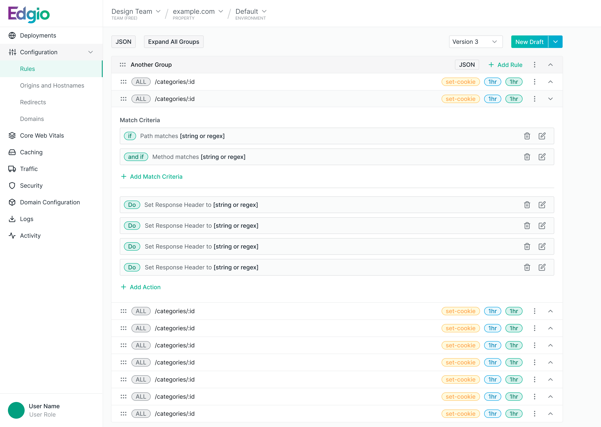

After two edge-platform companies merged into Edgio, customers were left with two overlapping products and two different ways of doing the same thing. I led the design work to bring them together into one coherent experience.

Edgio was formed from the merger of two companies, each with its own mature edge-delivery product, its own customers, and its own design conventions. On paper they did similar things. In practice, moving a customer from one to the other meant relearning core workflows like configuring rules, managing properties, and reasoning about how traffic was handled.
The goal was to converge the two into a single platform without forcing either set of customers to start over. That meant finding the shared mental model underneath both products and designing one set of patterns that could carry the combined feature set, starting with the rule configuration experience shown above.
As Director of Design I led the design effort behind the unification. I worked across the two former product teams to align on a common interaction model, set the design direction for the merged experience, and guided the team as we reconciled two design languages into one.
Contact
I'm currently exploring design leadership and senior IC opportunities. If you're building something meaningful and want a design leader who can also build, I'd love to hear from you.